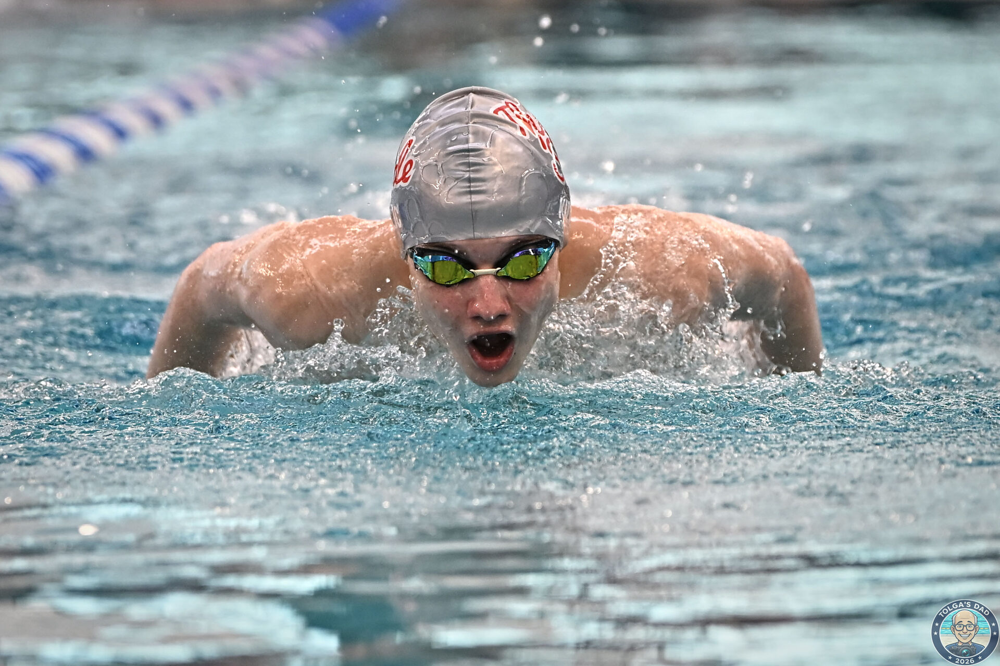
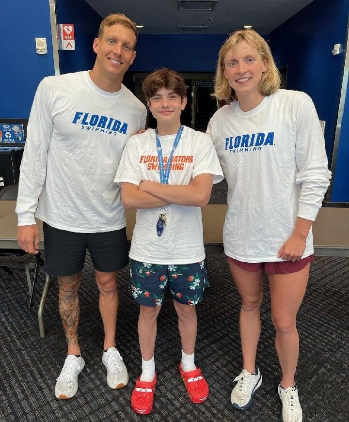
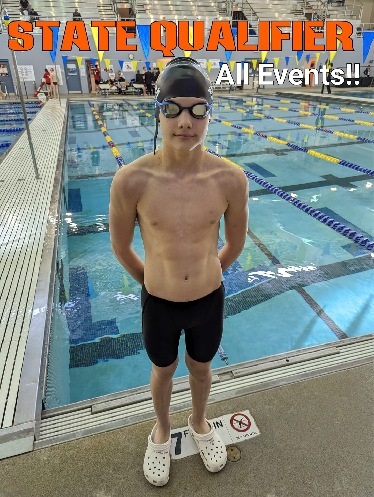
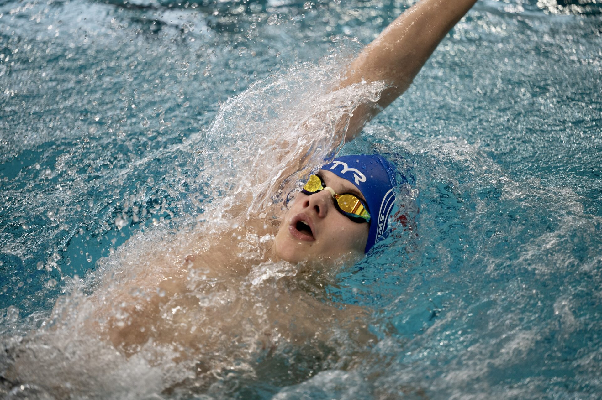
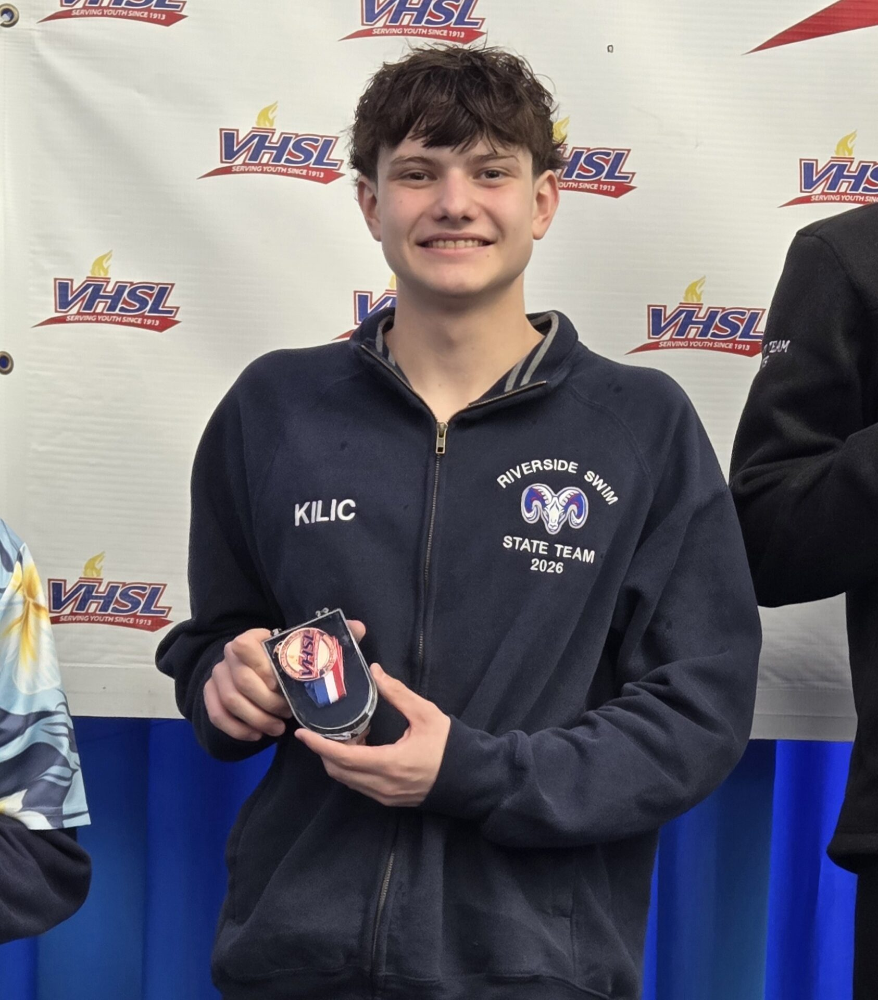
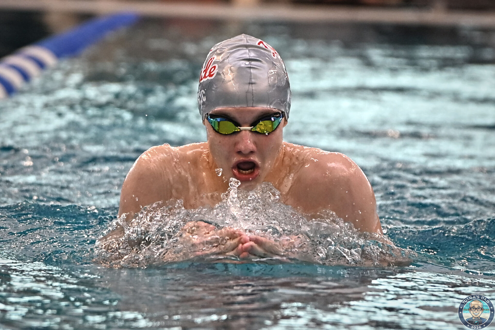
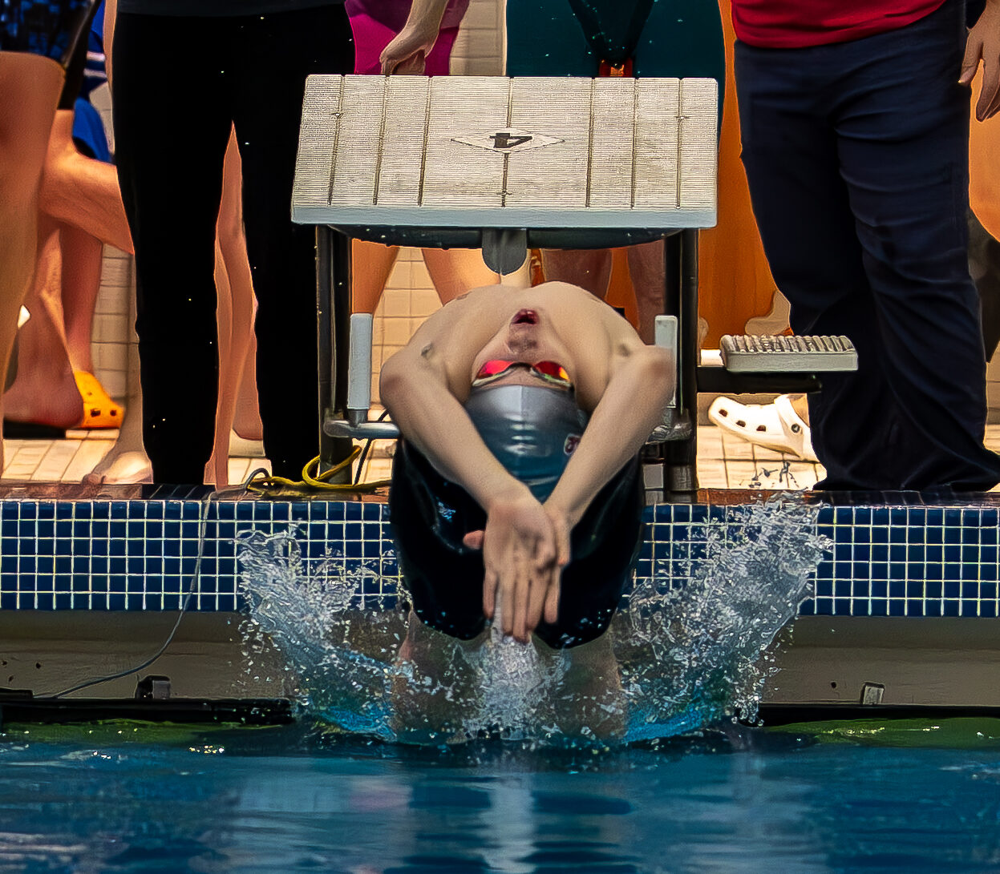
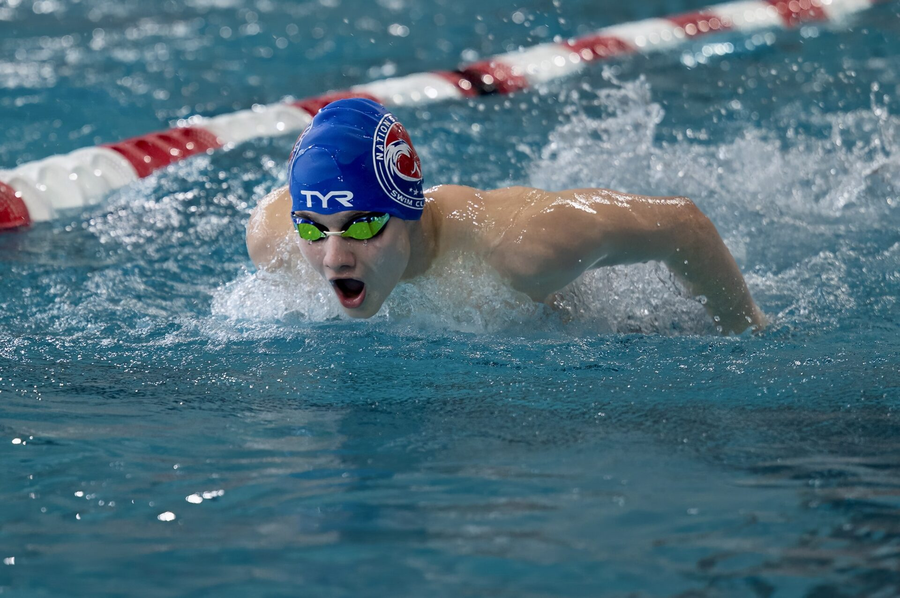
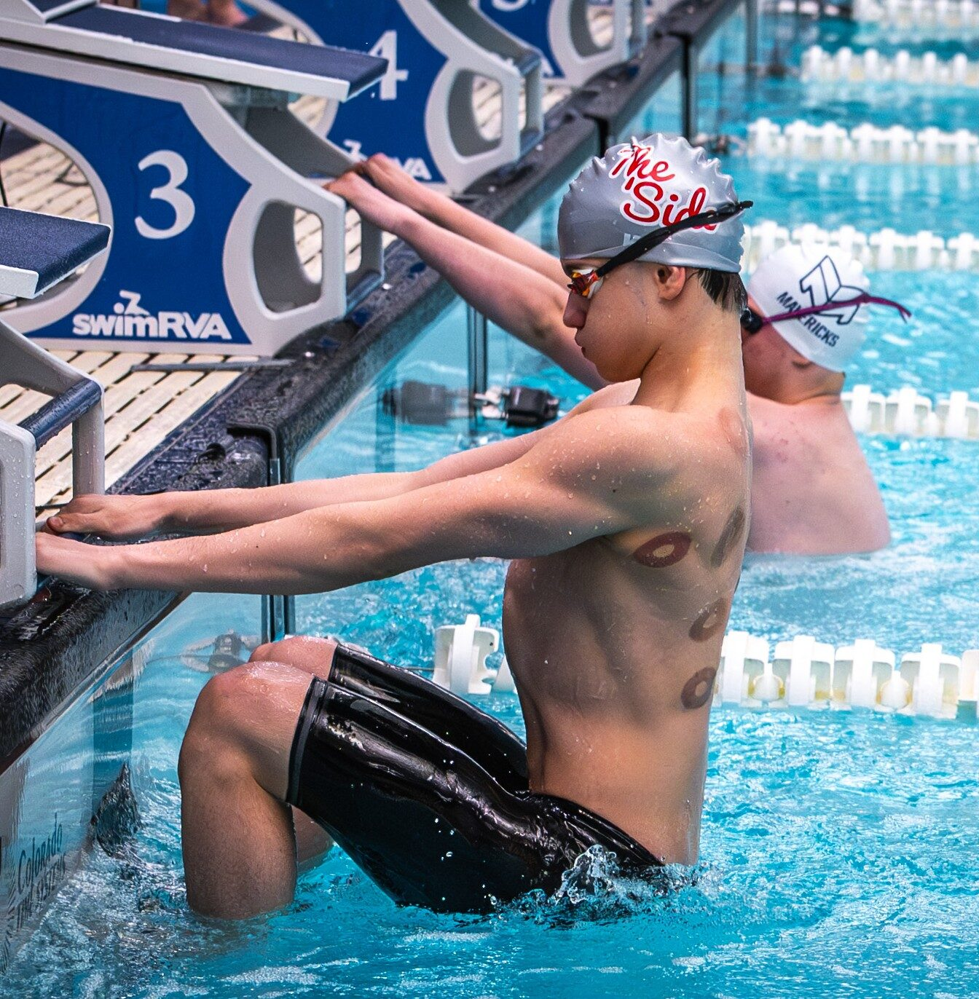
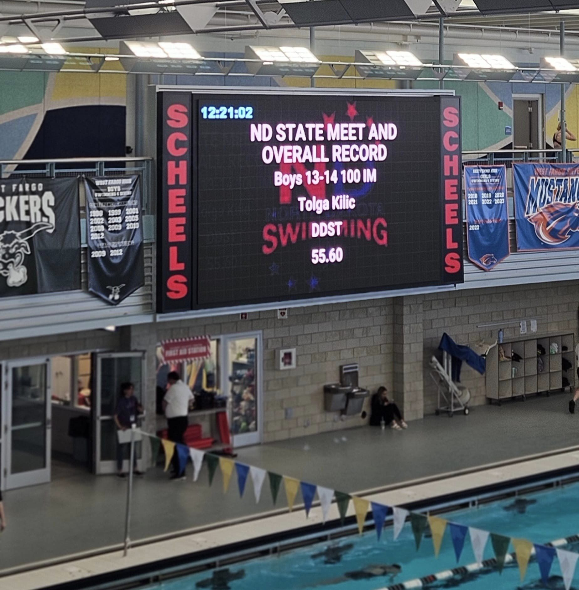

Riverside High School, Class of 2028 · Nations Capital Swim Club (NCAP), Potomac Valley Swimming
Tolga is proud to call Lansdowne, VA home, surrounded by a close-knit family of four who are fully invested in his journey. His father brings 20+ years of management experience in oil and gas, now consulting for energy sector companies, while his mother works as a part-time Database Administrator. His older brother, a former high school and club swimmer himself, understands firsthand the dedication swimming demands. Together, the family is wholeheartedly committed to supporting Tolga's swimming career.









